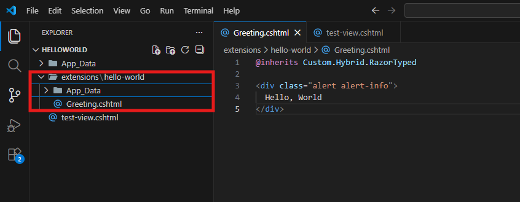
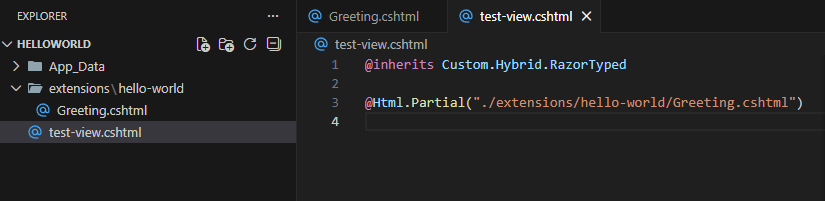

Create Your First Hello World App Extension
This tutorial walks you through the complete lifecycle:
- Build a tiny extension
- Test it in your App
- Configure and export it
- Import it into another App
Step 1: Create the Extension File
In your App, create this folder:
/extensions/hello-world/
Inside it, create Greeting.cshtml:
@inherits Custom.Hybrid.RazorTyped
<div class="alert alert-info">
Hello, World
</div>
Tip
@inherits Custom.Hybrid.RazorTyped is optional, but recommended so you can use the 2sxc API later.

Step 2: Test the Extension Locally
- 1. Create a Test Razor View
- 2. Create a View Definition
- 3. Add the View to a Page
- 1. Install the Package
- 2. Use It in a View
Create a test Razor file in your App (not in /extensions/).
Render your extension in that file using @Html.Partial(...).

Tip
Keep this test file outside /extensions/ so it does not become part of your extension package.